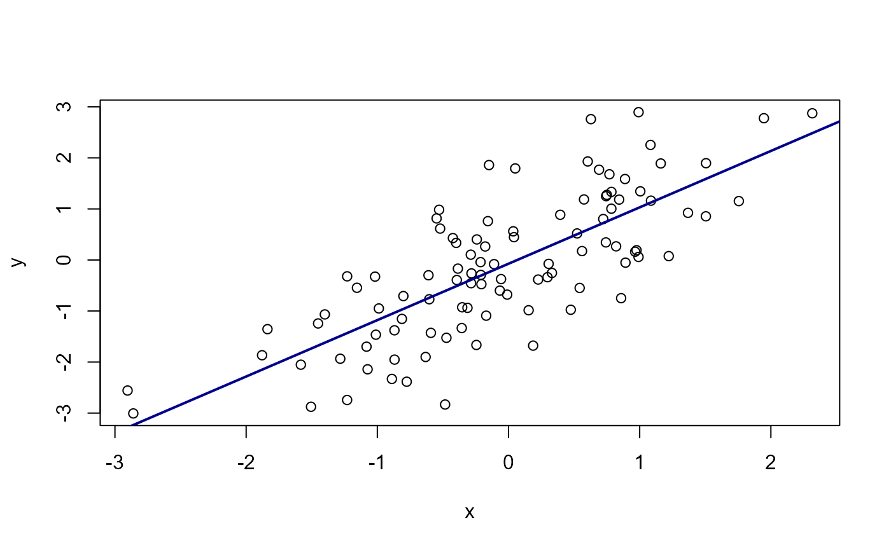

dreamerr: Error Handling Made Easy
Laurent Berge
2023-08-22
Source:vignettes/dreamerr_introduction.Rmd
dreamerr_introduction.RmdThis package aims to improve the user experience of R-users (just that! :-)). It offers developers, or anyone writing functions (therefore everyone!), a simple, flexible and powerful way to check all arguments passed to a function.
Debugging a call to a function can be a very frustrating experience:
misleading and unclear error messages can make it quite long to finally
make the function work. But this needs not be the case. The
dreamerr package provides the check_arg
function that does all the work of checking the arguments for you. From
the developer side, it is easy and intuitive to perform a full check on
the arguments passed to the function: in one line of code. From the user
side, they will get, if they provide wrong arguments, useful and
informative error messages. In terms of perfomance, since the code has
been highly optimized, the cost of checking arguments with
check_arg is close to 0.
This short introduction gives some basics on how to use
check_arg after the following example.
Motivating example
You have two numeric vectors x and y and you want to compute
sum(x, y):
sum(x, y)## Error in sum(x, y): invalid 'type' (closure) of argumentBam! there’s a problem… If you’re new to R, this message will look quite puzzling–and very unlikely to be helpful. Even if you’re an experienced R user (who’re acquainted to such error messages), it’s impossible to understand from where the problem comes from.
Now you run the same function but with error-handling:
sum_check(x, y)## Error: in sum_check(x, y):
## In argument '...', each element must be a numeric vector. Problem in the
## second element: it is not a vector, it's a function.It’s still an error. But now anyone can clearly understand the
problem (even if you’re a R-beginner)! It tells us that what we thought
was a vector (y) was in fact a function. The time to debug
this error is 0s due to the clarity of the error message: we know which
argument is the culprit and we know exactly what the problem is.
There’s a big gap in terms of user experience between the two functions, although there’s only one line of code of difference between the two:
How to use check_arg
The package offers (almost only) a single function:
check_arg. This function must be placed within a function,
its arguments must be argument names (the ones of the function),
followed by the type these arguments are expected to have. As follows:

Here are detailed only the basics. For much more detailed
information, with numerous examples, please see the help page of
check_arg.
Argument .type
The .type argument is the big thing. It supports
literally hundreds of different types and uses natural language to
express them. It must be a single character string, composed of several
types each separated by a pipe (|). For example if we use
"logical scalar | ts formula | data.frame ncol(,2)", it
means that the argument must be either: a logical scalar
(i.e. TRUE or FALSE), ii) a two-sided formula,
or iii) a data.frame with maximum 2 columns. Each pipe separates a type,
each type is equal to one main class (here scalar,
formula and data.frame) with (optionally)
additional restrictions (here logical, ts and
ncol(,2)). The table below shows the 13 different class
codes and the restrictions they are associated to.

Classes
The meaning of the classes is as follows:
scalar: an atomic vector of length 1, no tolerance for NAs. Option
NA OKallows NA values.vector: an atomic vector (vector of list do not fall in this class), tolerance for NAs. Option
NO NAthrows an error if it contains NAs,namedrequires the vector to have names.matrix: a matrix, tolerance for NAs. Option
NO NAthrows an error if it contains NAs,squarerequires the matrix to be square.vmatrix: a matrix or vector, tolerance for NAs. Option
NO NAthrows an error if it contains NAs,squarerequires the matrix to be square (if a vector, then it must be of length 1).data.frame: an object that inherits from
data.frame, tolerates NAs. OptionNo NAthrows an error if it contains NAs.vdata.frame: an object that inherits from
data.frame, or a vector; tolerates NAs. OptionNo NAthrows an error if it contains NAs.list: a list. Option
namedrequires it to have names.formula: a formula. Option
os(resp.ts) requires it to be one-sided (resp. two-sided).function: a function.
charin: a character scalar that must be in a list of choices. Option
multiaccepts vectors of length greater than 1. You can provide the choices in the argument.choices, or directly in parentheses after the class:charin(value1, value2, etc).match: a character scalar that must be in a list of choices after partial matching. Option
multiaccepts vectors of length greater than 1,strictenables case sensitivity (which is off by default). This class also reassigns the argument after the partial matching. You have three ways to provide the choices: i) in the argument.choices, ii) directly in parentheses after the class:match(value1, value2, etc), or iii) in the argument’s default values, e.g.fun = function(x = c("value1", "value2", etc)).path: a character scalar that should point to a directory or a file. Option
dirchecks that the path points to a directory. Optionreadchecks that the file exists already and has read permission. Optioncreatecreates up to the grand-parent and parent folders in case these do not exist.class: an object whose class is listed in parentheses. Example: if
class(lm, glm), then onlylmorglmarguments will be accepted.NA: exactly
NA(i.e. an atomic vector of length 1 equal to NA).
Restrictions
Each of these classes supports a set of restrictions, explained in Figure 2.
All atomic classes support sub-type restriction and restrictions
based on equality when the sub-type is numeric. The 5 simple sub-types
support conversion with the keyword conv, if this keyword
is present, then the value is converted to the appropriate type and
re-assigned back to the argument.
You can ensure the arguments have the appropriate length, number of
row or columns with len(a, b), nrow(a, b) and
ncol(a, b). Instead of having hard values, you can enforce
the arguments to have a length that depends on the context thanks to the
len(data) or len(value) syntax. For instance,
let’s say you have an argument weights, you want it to be a
vector whose length is equal to the number of observations in argument
base, then you can use
check_arg(weights, "numeric vector len(data)", .data = base).
You could alternatively use
check_arg(weights, "numeric vector len(value)", .value = NROW(base)).
For formulas, there is a support for multi-part formulas (package Formula, Zeileis
and Croissant 2010), you can restrict the number of parts on the left or
right with the left(a, b) and right(a, b)
syntax. You can also ensure that all variables contained in the formula
are either in the data set provided in the argument .data
or in the environment with the var(data, env) syntax.
For functions, you can restrict the number of arguments they have
with arg(a, b).
Globals
On top of the types, you also have 8 global keywords that can be anywhere in the type character string. These globals are:
MBT: requires the user to provide the argument (Must Be There).
NULL: allows the argument to be
NULL.NULL{expr}: allows the argument to be
NULL, ifNULL, then the argument is re-assigned the value ofexpr.safe NULL: allows the argument to be
NULLbut forbids the argument to be of the typex$asinceNULLvalues in this case are often mistakes–especially useful when the argument is a vector.L0: allows the argument to be of 0-length (by default, there’s always an error for 0-length arguments).
eval: evaluates the argument in a data set given in the argument
.data.evalset: evaluates the argument in a data set given in the argument
.data, then re-assigns the obtained value to the argument.dotnames: when checking the
...argument, requires all elements to be named.
check_set_arg
Actually there are two functions to check arguments:
check_arg and check_set_arg. The difference
between the two is that i) the second allows keywords that re-assigns
values to the argument (i.e. the match class, the
conv keyword, NULL{expr}, and
evalset), and ii) allows to check list elements of list
arguments.
Let’s illustrate when to use check_set_arg:
plot_cor = function(x, y = NULL, line.opts = list(), ...){
# x: numeric vector, must be given by the user
check_arg(x, "numeric vector mbt")
# y:
# - numeric vector of the same length as x
# - if y is NULL, then x with some noise is assigned to it
check_set_arg(y, "NULL{x + rnorm(length(x))} numeric vector len(data)", .data = x)
# We ensure line.opts is a list (even of 0-length)
check_arg(line.opts, "named list L0")
# The linear regression + options from ...
reg = lm(y ~ x, ...)
# plotting the correlation
plot(x, y)
# The fit, all arguments are in line.opts
# col:
# - if not provided => "firebrick"
# - partially matched to firebrick or darkblue
# - otherwise, a positive integer or a character scalar
check_set_arg(line.opts$col, "NULL{'firebrick'} match(firebrick, darkblue) | scalar(integer, character) GE{0}")
# lwd:
# - if not provided => 2
# - otherwise a positive integer scalar
check_set_arg(line.opts$lwd, "integer scalar GE{0} NULL{2}") # check + default
line.opts$a = reg
do.call("abline", line.opts)
}
plot_cor(rnorm(100), line.opts = list(col = "dark"))
Why sperating argument checking in two functions? First, it is
because check_set_arg requires (marginally, but still) more
processing–so it’s better to always use the faster function when
appropriate, and use check_set_arg only when needed.
Second, and this is the main reason, it is because dreamerr
allows the user to turn off argument checking with
setDreamerr_check(FALSE). If a call to a function works,
then writting off all check_arg calls would also work. This
is not the case for check_set_arg since it re-assigns
values to the arguments–and therefore can’t be turned off.
Developer mode
Ironically, to improve perfomance (since its computational footprint
should be very low), there is almost no error-handling in
check_arg!
But no worries: if you turn the developer mode on with
setDreamerr_dev.mode(TRUE), an in-depth check of any call
to dreamerr’s functions will be performed. This is especially useful if
you are not familiar with the syntax.
Yet beware, this error checking is really in-depth, thus rather computationnally intensive (about half a millisecond). Thus the developer mode should be off the majority of the time.
Adding error-handling to lm
Now that we know how to use check_arg, let’s provide
some error-handling to the lm function. There is still need
to check some stuff after that, but the bulk of the job is done (the
code is long because of the comments, otherwise it’s 9 lines for 13
arguments):
lm_check = function(formula, data, subset, weights, na.action, method = "qr", model = TRUE, x = FALSE, y = FALSE, qr = TRUE, singular.ok = TRUE, contrasts = NULL, offset, ...){
# data:
# - data.frame or named list (a data.frame is a named list, but it is still added for clarity)
check_arg(data, "data.frame | named list")
# formula:
# - must be provided by the user (mbt)
# - must be two-sided (ts)
# - variables must be in the data or in the environment [var(data, env)]
check_arg(formula, "ts formula var(data, env) mbt", .data = data)
# subset:
# - either a logical or an integer vector
# - can be a variable of the data set (eval)
check_arg(subset, "eval vector(logical, strict integer)", .data = data)
# weights:
# - vector of positive integers
# - can be NULL
# - can be a variable of the data set (eval)
check_arg(weights, "eval vector numeric GE{0} safe null", .data = data)
# na.action:
# - can be NULL
# - must be a function with at least one argument
check_arg(na.action, "null function arg(1,)")
# method:
# - either 'qr' or 'model.frame', partially matched
check_set_arg(method, "match(qr, model.frame)")
# You can pool arguments of the same type:
check_arg(model, x, y, qr, singular.ok, "logical scalar")
# contrasts:
# - NULL or list
check_arg(contrasts, "null list")
# offset:
# - can be NULL
# - numeric matrix or vector
check_arg(offset, "null numeric vmatrix")
mc = match.call()
mc[[1]] = as.name("lm")
eval(mc, parent.frame())
}And that’s it, now you get very precise error messages if you pass
wrong arguments in lm_check. Note that in terms of function
design, you could require that: i) the user must provide a data.frame,
and ii) all variables in the formula must be in the data.frame. Doing
that, you can save some further error handling down the road:
lm_check_bis = function(formula, data, subset, weights, na.action, method = "qr", model = TRUE, x = FALSE, y = FALSE, qr = TRUE, singular.ok = TRUE, contrasts = NULL, offset, ...){
# data: now only a data.frame and required
check_arg(data, "data.frame mbt")
# formula: All variables must be in the data
check_arg(formula, "ts formula var(data) mbt", .data = data)
# subset: => now we can be more precise
# - if logical: must be of the same length as the data (otherwise it's a mistake)
# - if integer, can be of any length (strict integer is used, because we don't want it to be logical)
check_arg(subset, "eval vector strict logical len(data) | vector strict integer", .data = data)
# weights:vector of positive integers, of the same length as the data
check_arg(weights, "eval vector numeric GE{0} safe null len(data)", .data = data)
# Below: same as before
check_arg(na.action, "null function arg(1,)")
check_set_arg(method, "match(qr, model.frame)")
check_arg(model, x, y, qr, singular.ok, "logical scalar")
check_arg(contrasts, "null list")
# we extract the left hand side (it can be multi response)
y = eval(formula[[2]], data)
# offset:
# - if y is a matrix => offset must be a matrix of the same number of columns
check_arg(offset, "null numeric vmatrix ncol(data)", .data = y)
mc = match.call()
mc[[1]] = as.name("lm")
eval(mc, parent.frame())
}Using argument checking when writing functions also shows you precisely what you expect the user to provide. It can help to design the code.